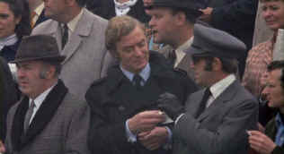

| Get Carter (SE)/B,B+ |
| Warner/1971/114/ANA 1.85 |
Michael Caine is all ice as Jack
Carter, a London hood. When Carter learns his brother has died he returns to his former Newcastle
home to investigate the circumstances. Reading a dog-eared copy of Raymond Chandler's Farewell
My Lovely on the Northbound train, Get Carter never looks back.
Get Carter revels in the tawdry existence of its characters. There's
not a sympathetic one in the bunch. They are either stained by the residue of coal dust from
abandoned Newcastle quarries, or like Carter, coal hopelessly trying to dress itself up as
diamonds. It'll take a millennium or two for any of these guys to break the mold of harsh
Newcastle. As Carter revisits his seedy past in search of a truth he instinctively knows, he bulls
his way through his old haunts. Carter won't take "no" for an answer.
 |
| Carter's cool malevolence. ©Warner |
Mike Hodges directs with straight ahead force, a
dark vision of grim streets and no sunlight. Carter is the perfect protagonist in the bleak and
uncompromising settings. Carter will get the job done. Anyone standing in his way will be dealt
with in expeditious or even malicious style.
While the script is pretty solid, it's character that counts in Get Carter.
There are inconsistencies Carter's style. The chases are pretty good, but one can't help wondering
why Carter is running after the extreme violence of his initial confrontations when the tough
Newcastle product more than takes care of himself.
Caine's performance is a polished beauty. Whether stroking the naked
backside of lonely landlady or evading an array of toughs, Caine is up to the task. Director Hodges
casts a solid team of supporting actors to help bring Get Carter an edge of reality.
Presented in a clean widescreen transfer, the 30 year old film retains
it's strength of vision. Lighting, so important to director Hodges and cinematographer Wolfgang Suschitzky is preserved with accurate levels.
Even the head lamp lit sequence is in perfect balance, revealing every nasty moment with perfect
exposure. Colors are surprisingly vital. Dig some of the yellows and reds. They jump off the screen
with no bleeding whatsoever.
Delivered as a special edition from Warner, Get Carter features
scene specific audio commentary from Mike Hodges, with add-in comments from Michael Caine and DP Suschitzky. Hodges proudly recollects his fine
directing triumph, delivering insight into the elements of the shoot as if it were yesterday.

The Feature Archive
has articles ranging from Akira
Kurosawa to Blonde Bimbos.
Roman
Holiday
Join the editor and his family on a trip through Roman movie sites in this unusual feature.

The Movie Poster Archive include extensive poster images from the films of stars like Susan Hayward, Kirk Douglas, Katharine Hepburn and many more. Our featured star is Clark Gable.


News, information, features about current films in theaters and in the
pipeline. Easy to use interface.

An on-line Home Theater magazine with excellent hardware reviews,
including thorough and responsible research. Check it out.

Doug Pratt's been doing almost longer than anyone in the business, reviewing laser discs, that is,
and now DVDs too. The venerable Laserdisc Newsletter has been publishing since 1984. Pratt probably
has a large enough stock of laser discs in his house to build a DVD-proof bomb shelter. Check out
his on-line reviews at DVDlaser.com.